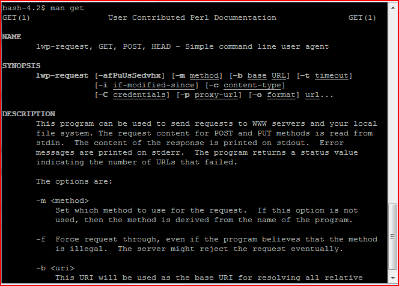

LINUX: where there is a shell, there is a way.
Below is the list of common Linux commands that I used at work:
cat, cd, clear, chmod, cp, df, diff, du, find, get, grep, history, ln, ls, mkdir, mv, ping, pwd, rm, sed, service, shutdown, tar, telnet, touch, unzip, vim.
For any command that I do not know the purpose of, I used to type: man "command name" to get a help menu for that command. Ex: man get.

Now I just google it.
For editing files in Linux, I use: vim. (vim is a superset of vi. So, everything that is in vi is available in vim.)
Common vim commands I used:
- i -- insert before current cursor
- a -- insert after current cursor
- gg -- goes to start of file.
- 0 -- goes to beginning of the line.
- $ -- goes to end of the line.
- nG -- goes to nth line.
- :nu -- set line number infront of each line.
- :set wrap -- wrap long lines.
- :w -- to save file any time.
- :wq -- save data and quit.
- :q! -- quit without saving.
- :wq! -- save change in file opened in read-only mode.
- :%s -- search and replace
Networking commands some I use often, some I rarely used:
- hostname -- find host and domain name.
- ping -- test net work connection.
- ifconfig -- getting network configuration.
- netstat -- print network connection, routing tables, interface statistic.
- telnet -- communicate with another hostname.
- finger -- view user information.
- nslookup -- Query DNS lookup name
- traceroute -- prints steps that packets take to get to the network host.
Back to top